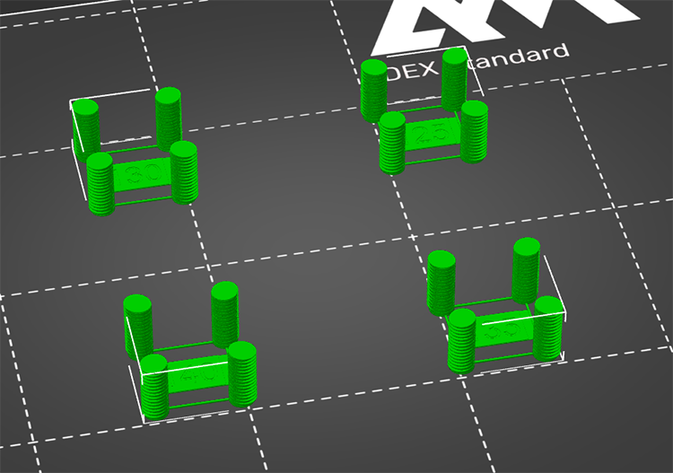

Kalibrierung des Extruderrückzugs |
||||
|
Es ist ratsam, die Durchfluss- und Temperaturkalibrierung durchzuführen. Diese Kalibrierung hilft Ihnen, die richtige Rückzugslänge für Ihren Extruder und das aktuelle Filament zu wählen.
Bei diesem Test wird ein Teststück gedruckt, dessen Rückzugslänge für jeden in der z-Achse gedruckten Millimeter zunimmt.
|  |
Wenn Sie einen Direktextruder haben, versuchen Sie es am besten mit einer Schrittweite von 0.1mm und einer Höhe von ca. 15mm, da man in der Regel nicht mehr als 1mm Rückzug benötigt.
Wenn Sie einen Bowden-Extruder haben, versuchen Sie es am besten mit einer 0.5mm-Schrittweite und ~ 15mm Höhe, da es nicht ungewöhnlich ist, dass Sie mehr als 6mm Rückzug benötigen. Sie können auch eine 0.2mm-Schrittweite und eine größere Höhe verwenden. Seien Sie vorsichtig, da eine hohe Rückzugslänge erhöht das Risiko einer Düsenverstopfung erheblich.
Hier sollten Sie mit der höchstmöglichen Temperatur beginnen.
Bei der Temperaturkalibrierung haben Sie ein Temperaturintervall, in dem Ihr Druck "gut genug" ist.
Wählen Sie dann im Feld "Tempabnahme" eine Option, die die Temperatur nicht zu sehr absenkt. "3x10°" bedeutet, dass drei Tests gedruckt werden, wobei der erste der erste mit der maximalen Temperatur und jeder weitere mit 10°C weniger Temperatur.
Diese Schaltfläche ändert Ihre Einstellungen in Filament / Kühlung, um alle Funktionen zu deaktivieren die ausgelöst werden, wenn eine Schicht zu klein ist, um rechtzeitig abgekühlt werden zu können. Mit diese Algorithmen deaktiviert sind, wird Ihr Druck in Bezug auf den Rückzug, also ein guter Stresstest. Um sie wieder zu aktivieren, entfernen Sie alle Änderungen auf der Registerkarte Filament (der kleine "Zurück-Pfeil").
Wenn die Teststücke gedruckt sind, können Sie den Millimeter mit den Rillen an den Seiten der Drucktürme zählen. Ich zähle sie mit meinem Nagel. Wenn du die Höhe erreicht hast Höhe, wo keine Fäden mehr vorhanden sind, können Sie die Millimeterzahl notieren. Multipliziere Sie mit Ihrem Schrittparameter (0.1, 0.2, 0.5 oder 1) und Sie hast IhreRückzugslänge. Sie können 20% mehr Länge hinzufügen, um einen kleinen Spielraum zu haben.
Wenn Sie mehrere Drucke mit unterschiedlichen Temperaturen haben, müssen Sie den den besten Druck auswählen, den mit der geringsten Fadenbildung, es sei denn, die Es sei denn, der Rückgang der Fadenziehung ist nicht groß genug, um die Absenkung der Temperatur zu rechtfertigen.
|
In diesem Druck erfolgt der letzte kleine Faden auf einer Höhe von ~10. Da ich einen Schritt von 0.5 verwendet habe, bedeutet dies, dass ich mindestens 5mm Rückzug brauche, aber Ich setze ihn auf 6, um sicher zu sein, dass fast alle Fäden entfernt werden. |
Die Rückzugsgeschwindigkeit sollte auf den maximalen Wert eingestellt werden, den Ihr Extruder/Treiber / Firmware zuverlässig unterstützen kann, mit einer Sicherheitsmarge. 50mm/s für den Einzug und 20mm/s für den Rückzug sind ein guter Anfang für PLA.
Lizenz für die für diesen Kalibrierungstest verwendeten Modelle: CC BY-SA 3.0